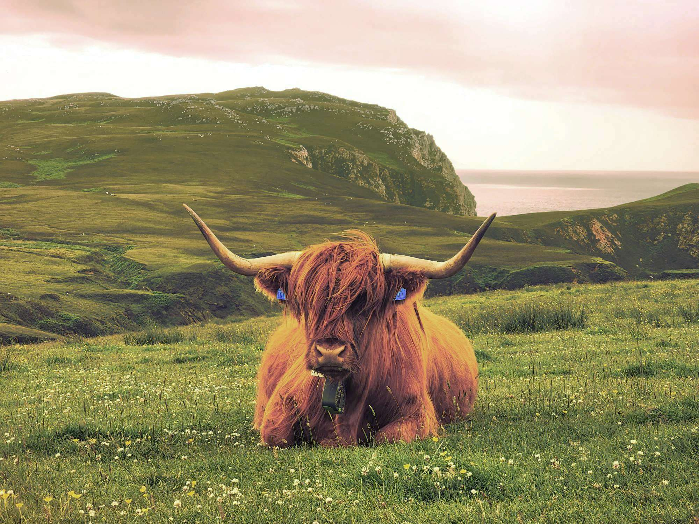
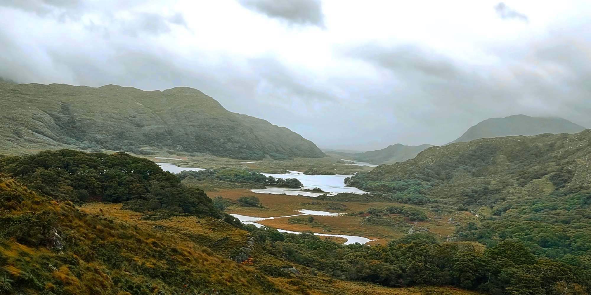
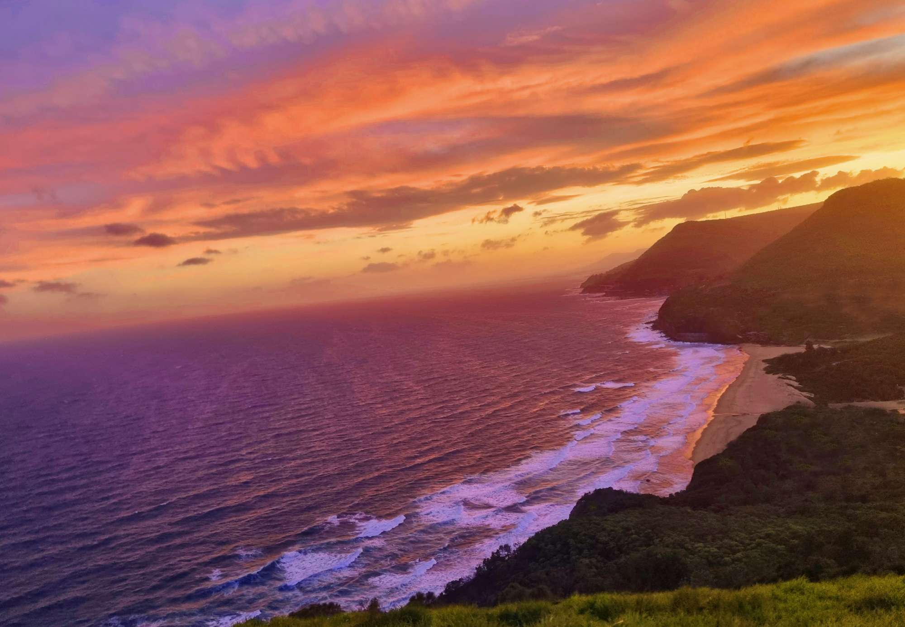

Bildredigering
Nedan är de tre bilderna som jag har redigerat. Bilderna har färgkorrigerats, ljusbalansera för att passa ihop. Tekniker som borttagninga av objekt och färgändring har användts. Bilderna på väster sida är de oredigerade bilderna och bilderna på höger sida är de redigerade bilderna.


Redigerad landskapsbild med höglandsboskap har örontaggens färg bytts ut till blå. Jag upplevde att bilden var mycket röd och varm så jag valde att ändra med RGB till kallare färger genom att framhäva blått och gränd och höja exponeringen och mer mättnad.


Redigerad naturlandskap mulet väder. Jag upplevde att bilden var grå och började med saturationen, ljusstyrkan. I RGB ökade jag grön och röd färg. Gul och blå färgen sänktes


Redigerad kustlandsap med strand och en liten by vid havet har färgerna ändrats. Jag upplevde att bilden var röd och började med saturationen, ljusstyrkan. Hittade funktionen color balance och ändrade färgerna på bilden i highlight och midtone och shadows. Röda värderna sänktes i de tre kategorier samt gul färg i midtones och för låt i highligts. Sedan redigerade jag bort civilisationen på bilden.